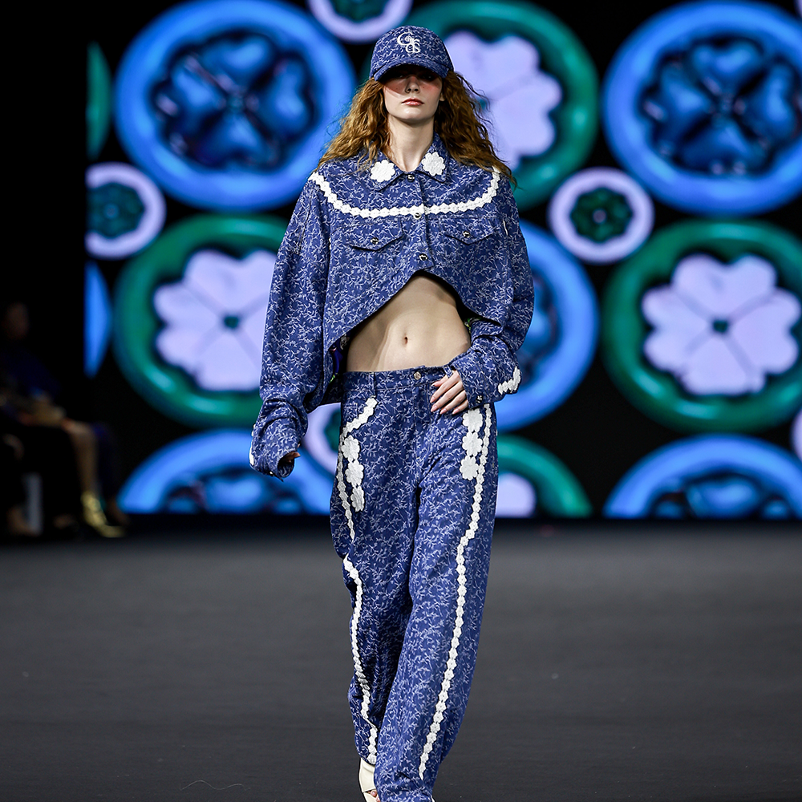
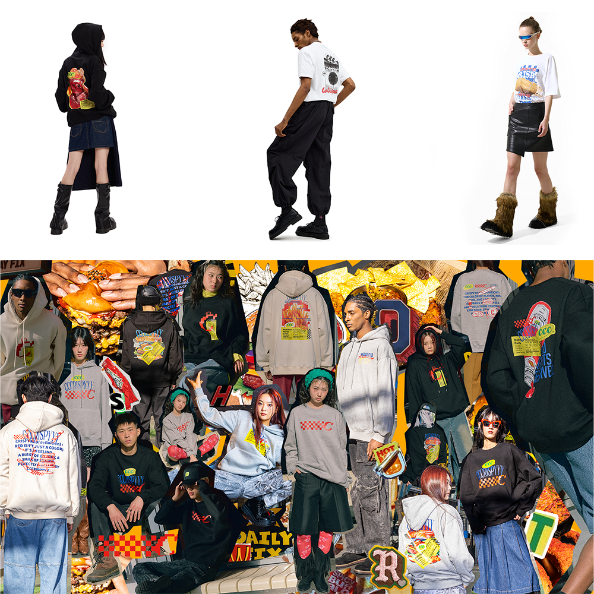
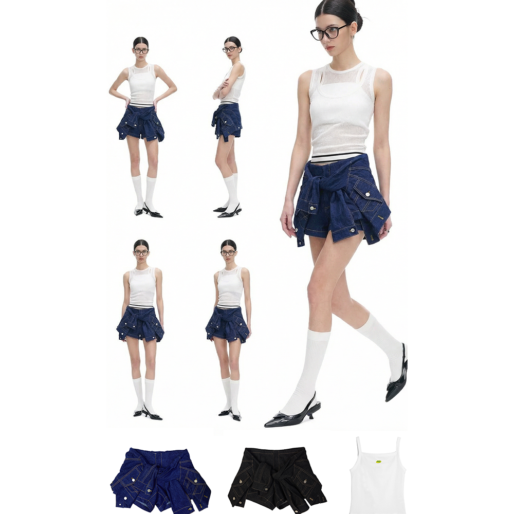

Background
단가 높은 가격의 디자이너 브랜드. 온라인 판매 채널이 없었고, 마케팅 활동이 온드채널 활동을 제외하곤 없었습니다.
온라인 판매 채널 구축 및 채널단위 판매 전략이 필요했습니다.
Our Solution
01. 프리미엄 브랜드의 온라인 채널 전략
일련의 A/B 테스트를 통해 높은 가격대로 구성되어 있는 본 브랜드 제품의 온라인 매출이 기존 오프라인 매장 매출 만큼 효율을 낼 수 없다고 판단되었습니다. 본 브랜드의 온라인 채널 및 자사몰은 철저하게 오프라인의 서브 채널로 구축될 수 있도록 했고, 다양한 피스의 룩을 한눈에 보고, 실제 방문하지 못하는 고객분들에게 도움을 줄 수 있는 용도로 기획을 했습니다.

02. 매스 브랜드 런칭
테스트 통해 얻은 데이터를 참고하여 높은 가격대 허들을 보완한 매스 브랜드를 신속히 런칭해서 온라인 커머스에 맞는 패션 브랜드 구축 작업을 진행하였습니다.
- 인플루언서 시딩: 기존 인프라를 활용한 제품 시딩, 패키지 다변화를 통해 브랜드 인지도 상승을 목표로 하였습니다.
- 프로모션 및 캠페인 생성 : 페이드 채널과 별개로 온드채널에서 지속적인 캠페인을 발행하고 팔로워 모객에 집중하였습니다. 해당 반응 유저를 토대로 리타겟팅과 CRM 작업을 함께 진행하였습니다.


What We Achieved
10-15만원
일 광고 집행 비용
70만원
일 평균 매출
700%
최고 ROAS
META채널 일 집행비용 10만원, 일 평균 65만원+ 달성